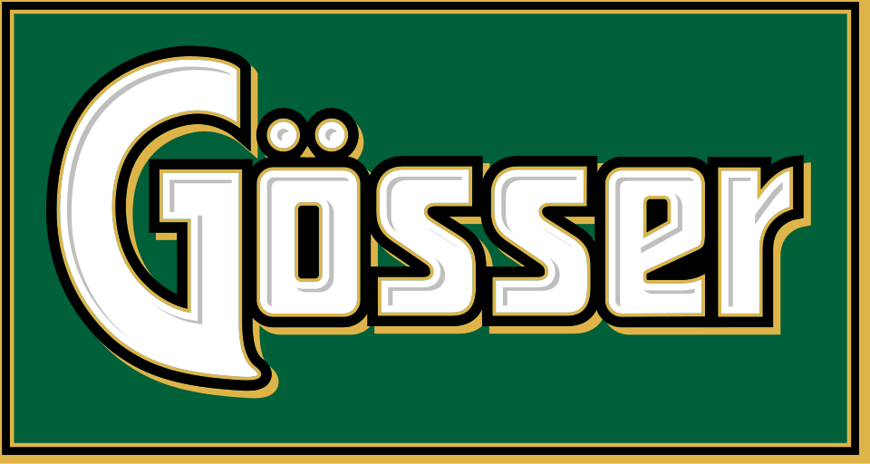

오스트리아 브랜드 10
오스트리아에서 시작한 브랜드 10개를 로고와 함께 모았습니다. 대표적인 오스트리아 브랜드로는 KTM, 스와로브스키(Swarovski), 레드불(Red Bull), 우니베르잘 에디션(Universal Edition), 리브로(Libro), 홀란드 블루멘 마크(Holland Blumen Mark) 등이 있습니다. 수록 기준은 검수된 브랜드 설명이나 공식 웹사이트가 일치하는 위키데이터 개체에서 기원 국가가 확인된 경우로 한정했습니다.
다른 국가 보기
국가별 전체 →산업별로는 식음료 4개, 리테일·커머스 2개, 패션·럭셔리 1개, 미디어·엔터테인먼트 1개 순입니다. 설립연도가 확인된 브랜드는 8개이며 가장 오래된 곳은 1834년, 가장 최근은 2002년에 시작했습니다. 시기별로는 1900년 이전 3개, 1900~1949년 2개, 1950~1999년 2개, 2000년 이후 1개입니다. 수록 자료로는 로고 이미지 9개, 로고 변천 자료 3개, 연혁 타임라인 3개를 갖췄습니다. 이 가운데 9개는 공식 웹사이트가 일치하는 위키데이터 개체로 연결해 두었습니다.
산업별 오스트리아 브랜드
오스트리아 브랜드 목록
 스와로브스키Swarovski오스트리아 · 1895년
스와로브스키Swarovski오스트리아 · 1895년스와로브스키(Swarovski)는 1895년 다니엘 스와로브스키가 오스트리아 바텐스에 설립한 크리스탈 제조·럭셔리 브랜드이다.
레드불Red Bull오스트리아 · 1987년레드불(Red Bull)은 1987년 오스트리아에서 출시된 세계 최대 에너지음료 브랜드이다.
 리브로Libro오스트리아 · 2002년
리브로Libro오스트리아 · 2002년리브로(Libro)는 오스트리아의 문구·서적 소매 체인으로 MTH 리테일 그룹에 속한다.
 오스트리아 항공Austrian Airlines오스트리아
오스트리아 항공Austrian Airlines오스트리아오스트리아 항공(Austrian Airlines)은 오스트리아의 국적 항공사다.

괴서Gösser오스트리아 · 1860년괴서(Gösser)는 오스트리아 레오벤의 괴서 양조장이 만드는 대표 맥주 브랜드이다.
 슈티글 양조장Stiegl Brewery오스트리아
슈티글 양조장Stiegl Brewery오스트리아슈티글 양조장(Stiegl Brewery)은 1492년 오스트리아 잘츠부르크에서 설립된 양조 회사이다.
 우니베르잘 에디션Universal Edition오스트리아 · 1901년
우니베르잘 에디션Universal Edition오스트리아 · 1901년우니베르잘 에디션(Universal Edition)은 1901년 빈에서 설립된 오스트리아의 클래식·현대음악 악보 출판사이다.
 Mohren-Brewery오스트리아 · 1834년
Mohren-Brewery오스트리아 · 1834년Mohren-Brewery는 오스트리아 포어아를베르크주의 도른비른에 있는 양조장이다.
 KTM오스트리아 · 1934년
KTM오스트리아 · 1934년KTM(KTM-Sportmotorcycle AG)은 1934년 오스트리아 Mattighofen에서 창업한 스포츠 모터사이클 제조 업체이다.
홀란드 블루멘 마크(Holland Blumen Mark)는 오스트리아의 꽃 소매 체인이다.